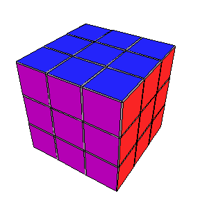

![[Graphics:Images/index_gr_2.gif]](Images/index_gr_2.gif)
| HOME | PERSONAL | PROJECTS | LINKS |

To find the model that best fits the popular game it's useful to look
at the cube as a mechanical object rather than an abstarct mathematical one.
Hold a cube in your hands, for ours porpouse it shows three degrees of freedom:
the three rotations. We only consider four posistion of each rotation.
In the Rubik's one, you can choose three blocks to rotate on each axes of rotation, so all the different configurations are: 4 position per rotation, 3 blocks to move for each axis, 3 axes.
All the configurations can be thought as points in the space. Each possible
movement is a step in a particular direction of the space.
The dimensions of the space can be found by counting how many distinct
points are reachable in one step. We find 2 way for each rotation (clockwise,
anticlockwise), 3 block to move for axis, 3 axes.
The number of reachable configurations is 2 * 3 * 3 = 18. The dimensions are 9.
![[Graphics:Images/index_gr_4.gif]](Images/index_gr_4.gif)
How many movements I've got to do to reach the final configuration?
It's useful to think at the problem as an iperspace of dimension 9.
Hour metric in this space is simply the number of single movent applied the the cube. The space is build by 9 variables each of them assuming four values.
It's useful to visualize this space in 2 D. A grid of 4 lines shows all the points (configurations) that fill the space.
![[Graphics:Images/index_gr_6.gif]](Images/index_gr_6.gif)
Which is the worst case? How many movements do I have to do to reach that point? In 2D the longer walk is the diagonal. Be carful: the only walks allowed are build by the segments parallel to each axis.
So you can find that to reach two points of the smallest square you have to walk two lines. This happens in 2D.
In 3D you reach the point opposite to the major diagonal of the smallest cube with three steps.
![[Graphics:Images/index_gr_7.gif]](Images/index_gr_7.gif)
Each axis of the space can assume 4 values. To reach to opposite vertex of the ipercube we need 3 steps each axis.
![[Graphics:Images/index_gr_8.gif]](Images/index_gr_8.gif)
The count of maxsteps not involves the count of the configurations.
The count of the configurations shown above is not correct. We have to
take into account that the distinct configurations are fewer.
In fact groups of three movements along the same axis are equivalent to
a rotation of the whole cube.
Starting from a base configuration:
![[Graphics:Images/index_gr_10.gif]](Images/index_gr_10.gif)
all the configurations are obtained multiplying each element by n modulus 4, n=1, 2, 3, 4.
The equivalents ones can be found multiplying by n all the elements belonging to the same axis.
![[Graphics:Images/index_gr_12.gif]](Images/index_gr_12.gif)
All the possible transformation are:
![[Graphics:Images/index_gr_14.gif]](Images/index_gr_14.gif)
So there are 32 redundant configurations.
The total number of configurations, taking into account the redundant ones, are:
![[Graphics:Images/index_gr_16.gif]](Images/index_gr_16.gif)
In conclusion the space of the configurations is large but at least in 27 movements you can reach the end. Naturally you have to choose the right way.
It would be useful to code a cost function that shows how far we are from the solution to implement an auto-play game.
| HOME | PERSONAL | PROJECTS | LINKS |